2025 was a great year for music!
Particularly in recent years, a fair amount of ink has been spilled about how the musical album is dying. This sentiment has continued to grow as streaming services dominate the musical distribution landscape, creating a premium for singles and other shorter, more digestible units of musical output. As a result, I decided that, on principle, I was going to make an effort to listen to more full albums in 2025. I’ve always had an affinity for listening to full albums anyways so this was a pretty easy decision for me. Below, I catalogue my favorite albums of the year, some honorable mentions, and finally some of my least favorite albums! I pretty much don’t listen to albums that I don’t at least think I might enjoy. As a result I end up listening to a lot more albums that I do enjoy than those that I don’t.
Without further ado, the following are my favorite albums of the year:
Favorite Albums
Melanchronica — Bas & The Hics
Since Too High to Riot, Bas has teamed up with The Hics
for a variety of features, but this is their first full-length co-feature.
The Hics provide an unexpected (instrumental, indie rock, neo-soul), but sonically delightful, alternative to what you're used to getting from Bas. Melanchronica is unique but cohesive
and was my favorite album of the year.
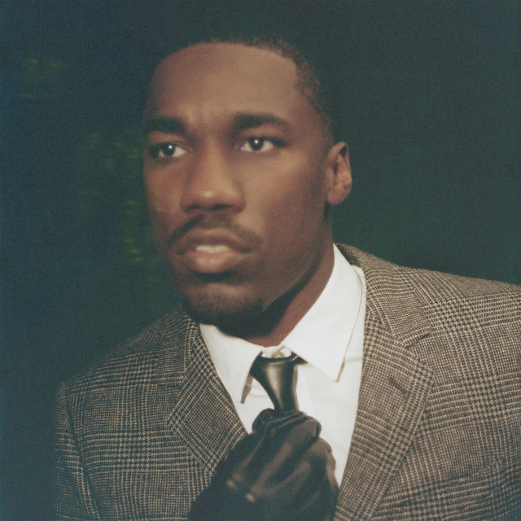
BELOVED — Giveon
After TAKE TIME, Giveon's sound has trended from alternative R&B towards
a more commercial sound, which has led to me not enjoying his recent releases as much.
As a result, BELOVED was a very pleasant surprise! Although the
individual songs sometimes lack a bit of uniqueness, the album as a whole is an extremely easy listen. I found myself continuing to come back to this album, especially when I
wanted something that I could enjoy front-to-back.
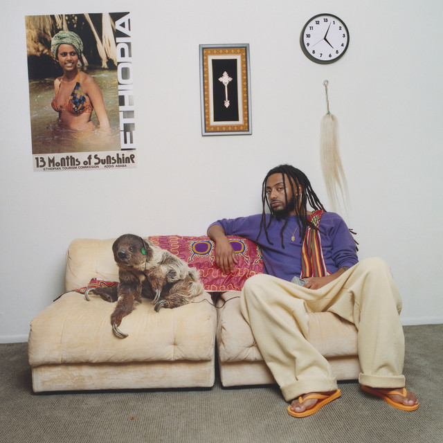
13 Months of Sunshine — Aminé
13MOS delivers exactly what it promised. From New Flower to Cool About It to Arc de Triomphe, the production is smooth, peppy, and bright; it feels like summer. Despite
a handful of filler songs that are consistently skips from me, I had 13MOS on repeat throughout much of 2025.
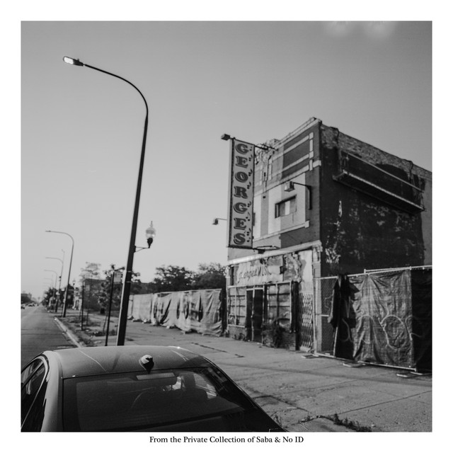
From The Private Collection of Saba and No ID — Saba & No ID
FTPC is a fascinating album. There are only a couple songs (Westside Bound Pt. 4, 30secchop) that I love as standalone songs. Despite that, this album has the best
internal consistency of any other 2025 album; each track pairs immaculately with the surrounding
tracks, resulting in an album where the whole is greater than the sum of its parts. FTPC exemplifies the attention to detail and overarching vision of a good album and was one of my favorites of 2025.
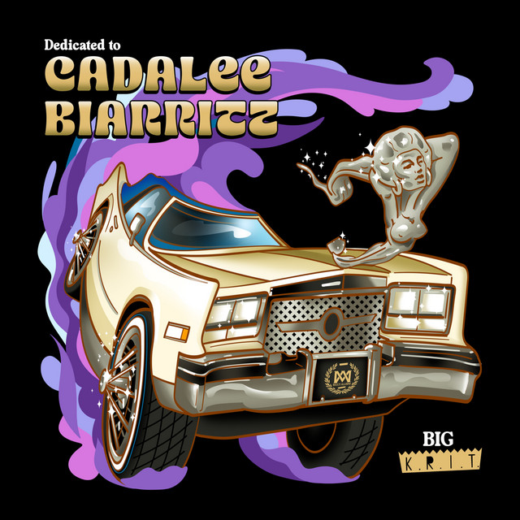
Dedicated to Cadalee Biarritz — Big K.R.I.T.
It's been a minute since Krit dropped anything, and even longer since his most classic stuff. I had low expectations going in to the first listen, and finished feeling like it was maybe his best since 4eva Is A Mighty Long Time. Consisting of a nice mix of Southern trunk-thumpers and smooth jams, Cadalee Biarritz was sonically one of the easiest listens of 2025.
Honorable Mentions
The following albums are my honorable mentions. These albums lack the consistency of my favorites, but are still fantastic albums and contain some of my favorite songs of the year:
Life Is Beautiful — Larry June, 2 Chainz, & The Alchemist
Larry June and 2 Chainz teaming up was not something I had on my 2025 bingo card, but their
styles pair surprisingly well. Against the backdrop of The Alchemist's customarily crisp,
smooth beats, this album scores high in the vibes department. Life is Beautiful
has low lows, and extremly high highs; approximately 1/2 are songs that I wouldn't miss
if they were removed, while the other 1/2 includes some of my favorites
of 2025, such as Life Is Beautiful and Jean Prouvé.
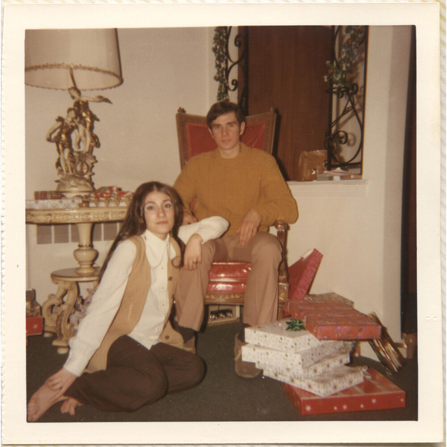
FATHER FIGURE — Jon Bellion
FATHER FIGURE was a bit of Jon Bellion renaissance for me. He proved his hitmaking abilities
with songs including KID AGAIN and WASH. I also really appreciate the threads of
finding purpose, true success, and fatherhood that he carries throughout the album. A
thoroughly enjoyable album on multiple dimensions.
The Boy Who Played the Harp — Dave
Leaning heavily into instrumental tracks and vocal features/samples, The Boy Who Played the Harp
strays far from the beaten path. This album is a melodic journey of introspection on success,
legacy, and change (both social and personal) that is both thought-provoking and beautiful.
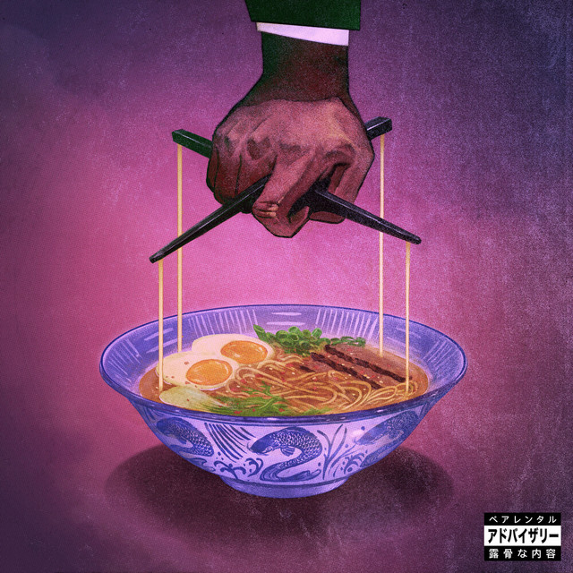
Alfredo 2 — Freddie Gibbs & The Alchemist
Alfredo 2 elevates The Alchemist's legendary recent run and continues to cement his place as
one of the elite producers of our generation. Although this album lacks the depth and consistency
of its iconic predecessor, Alfredo, it still delivers glimpses of brilliance
throughout (see 1995, Ensalada, Shangri La, etc.).
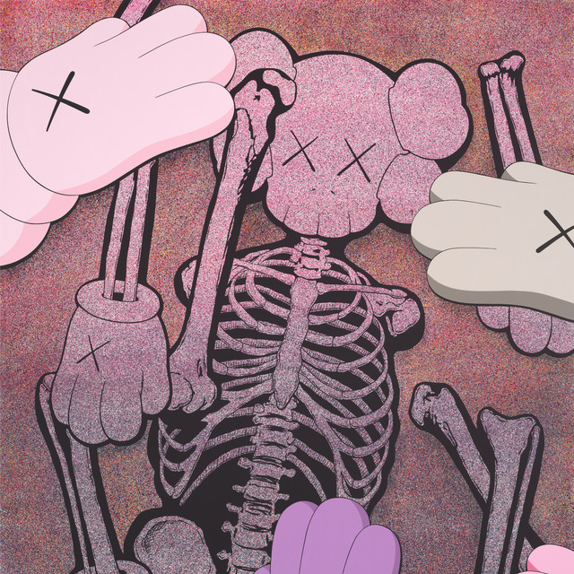
Let God Sort Em Out — Clipse
Let God Sort Em Out was one of the most polarizing albums of 2025 for me. A handful
of songs (The Birds Don't Sing, E.B.I.T.D.A., F.I.C.O., Let God Sort Em Out/Chandeliers) to me were elite, while the others were consistent skips. This lack of consistency
kept this (barely) from being one of my favorites of 2025.
You Can't Kill God With Bullets — Conway the Machine
As someone who has historically slept on Conway the Machine, You Can't Kill God With Bullets
far exceeded any of my expectations. This album creates a gratifying tension, combining smooth, commercial beats (The Lightning Above The Adriatic Sea; Parisian Nights) with classic boom bap (Crazy Avery; Mahogany Walls). This was the last 2025 album I listened to and, with a little more listening time, could easily have become one of my favorites.
Least Favorites
Life isn’t all lilies and roses, and unfortunately neither are all the albums I listened to in 2025. Lest this be interpreted as me being a hater, I’m mostly not! In general these albums were just like drinking flat soda; not objectively horrid but not something I’m going to ingest on purpose. With that out of the way, let’s begin:
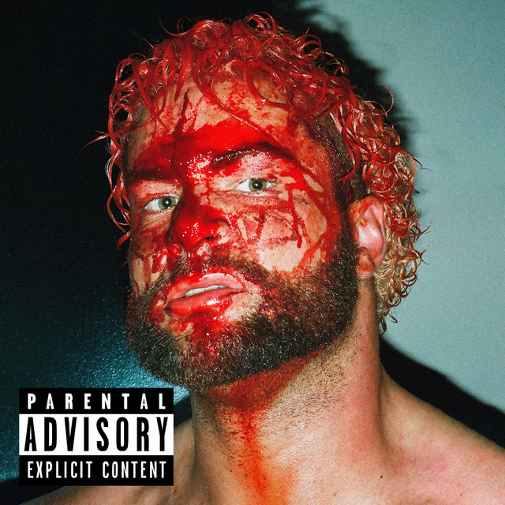
HEELS HAVE EYES 2 — Westside Gunn
Unfortunately, Westside Gunn is just not my cup of tea. I really don't vibe with his voice and I
hate his adlibs. This has the unfortunate effect of making me unable to truly enjoy his
albums. HEELS HAVE EYES 2 is no exception. It's like the opposite of the Midas touch.
Even the beats that I really like (AMIRA KITCHEN; PRICK) turn sour when I hear
Westside Gunn on them.
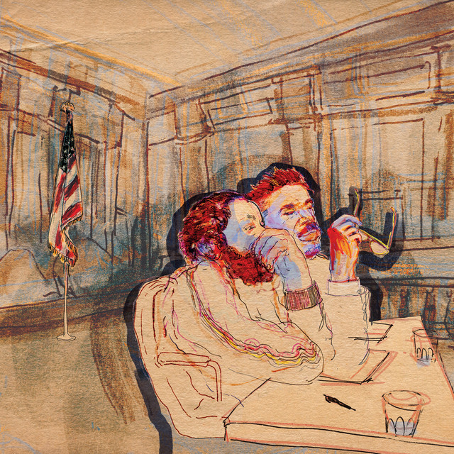
Mercy — Armand Hammer & The Alchemist
Mercy marries intricate, dark beats with complex, disjointed rhymes. It almost
feels like listening to a chaotic dream. The result was an album that I didn't
fully understand or particularly enjoy. There was, however, one prominent outlier;
Calypso Gene was one of my absolute favorite songs of 2025.
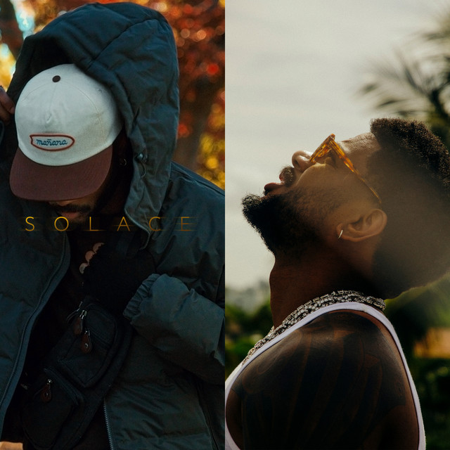
Solace & The Vices — Bryson Tiller
Since dropping one of the 2010's (all-time?) most influential R&B albums in TRAPSOUL,
it feels like Bryson Tiller is still searching for that same spark. Solace & The Vices
is not terrible; it just feels slightly boring and monolithic.
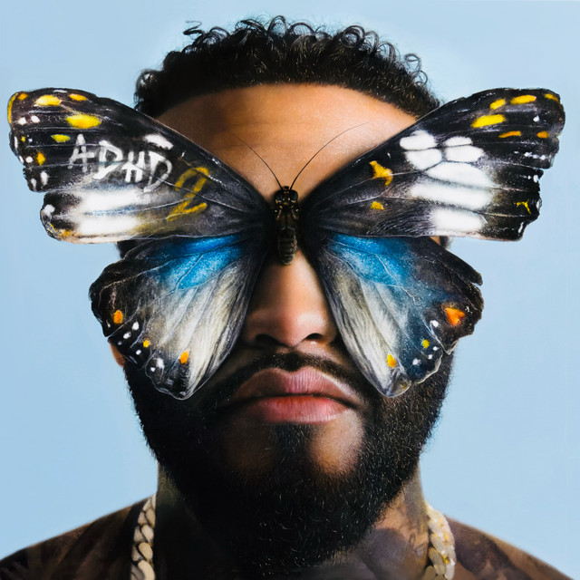
ADHD 2 — Joyner Lucas
At the risk of sounding like a broken record, my issue with ADHD 2 is more of the same.
If this was the first Joyner Lucas album I ever heard, I would probably enjoy it. But it's not.
It lacked a sense of creativity and originality; every song felt like I had already heard it before.
This is the first Joyner Lucas release in years that I haven't enjoyed, and I hope that he can have a
return to form moving forward.
Despite these underwhelming records, 2025 delivered many more hits than misses and I feel confident that 2026 will be more of the same. Until then, happy listening!